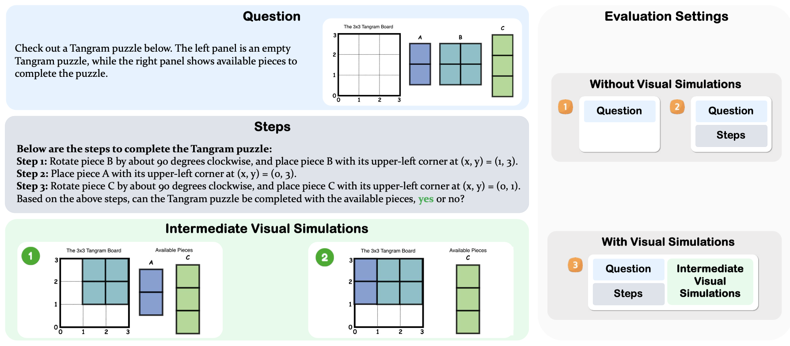

Spatial cognition is essential for human intelligence, enabling problem-solving through visual simulations rather than solely relying on verbal reasoning. However, existing AI benchmarks primarily assess verbal reasoning, neglecting the complexities of non-verbal, multi-step visual simulation. We introduce STARE (Spatial Transformations and Reasoning Evaluation), a benchmark designed to rigorously evaluate multimodal large language models on tasks better solved through multi-step visual simulation. STARE features ∼4K tasks spanning foundational geometric transformations (2D and 3D), integrated spatial reasoning (cube net folding and tangram puzzles), and real-world spatial reasoning (perspective and temporal reasoning), reflecting practical cognitive challenges like object assembly, mechanical diagram interpretation, and everyday spatial navigation.
Our evaluations show that models excel at reasoning over simpler 2D transformations, but perform close to random chance on more complex tasks like 3D cube net folding and tangram puzzles that require multi-step visual simulations. Humans achieve near-perfect accuracy but take considerable time (up to 28.9s) on complex tasks, significantly speeding up (down by 7.5 seconds on average) with intermediate visual simulations. In contrast, models exhibit inconsistent performance gains from visual simulations, improving on most tasks but declining in specific cases like tangram puzzles (GPT-4o, o1) and cube net folding (Claude-3.5, Gemini-2.0 Flash), indicating that models may not know how to effectively leverage intermediate visual information.

Figure 2
STARE is structured to comprehensively cover spatial reasoning at multiple complexity levels, from basic geometric transformations (2D and 3D) to more integrated tasks (cube net folding and tangram puzzles) and real-world spatial reasoning scenarios (temporal frame and perspective reasoning). Each task is presented as a multiple-choice or yes/no question using carefully designed visual and textual prompts. In total, the dataset contains about 4K instances across different evaluation setups.
Figure 3: The different variants in the Tangram Puzzle task.
STARE separates tasks that can be visually simulated, i.e., where each transformation step is visually observable, from tasks demanding more abstract and implicit mental simulations, such as perspective reasoning. To support more fine-grained evaluation, we synthesize the tasks that humans can mentally picture or even explicitly draw the intermediate steps, including 2D transformations, 3D transformations, cube net folding and tangram puzzle. Additionally, STARE tasks are intentionally crafted to closely reflect real-world scenarios such as assembling objects (e.g., tangram puzzles), interpreting mechanical diagrams (e.g., cube net folding) and navigating environments (e.g., perspective reasoning).Detailed statistics of STARE are provided below.
Table 1: Dataset statistics grouped by task category.
Figure 4: Data Statistics of STARE.
Models exhibit significant variation in spatial reasoning performance across STARE tasks. Accuracy is highest on simple 2D transformations (up to 87.7%) but drops substantially for 3D tasks and multi-step reasoning (e.g., cube nets, tangrams), often nearing chance. Visual simulations generally improve performance, though inconsistently across models. The reasoning-optimized o1 model performs best overall with VisSim, yet still lags behind humans. Human participants consistently outperform models, confirming the complexity of STARE tasks.
💡Q1: How well do models understand individual transformation types in 2D and 3D?
Models perform best on 2D scaling and 3D translation. Visual simulation helps most with complex 2D tasks like shearing and reflection, but has mixed results in 3D—sometimes even reducing accuracy. See Figure 5.
Figure 5: GPT-4o performance on 2D/3D transformation types.
Figure 6: A perception error from Claude-3.5 Sonnet.
💡Q2: How does model accuracy change as task complexity increases?
Model accuracy drops as tasks get harder, especially without visual aids. Two-step transformations are easier than one- or three-step ones. Visual simulation helps in 2D but is less effective for hard 3D tasks. See Figure 7.
Figure 7: GPT-4o performance vs. task complexity.
💡Q3: Do model failures originate from basic visual perception errors?
Partially. When directly presenting the model with the final, fully simulated outcomes, reducing the problem to visually matching these outcomes to the correct candidate answers, accuracy improves slightly. But as Table 2 shows, for structured tasks like cube folding, accuracy jumps to 100%, revealing that perception—not reasoning—is often the bottleneck, especially in 3D. Figure 6 illustrates an example of perception error.
💡Q4: How well do models reason spatially in text?
Text descriptions improve performance in 2D but not much in 3D. Tasks like cube folding still confuse models, indicating that mental simulation from text remains a major challenge. See Table 3.
💡Q5: How well do models verbally simulate without visual simulation?
Generally no. Adding verbal reasoning steps brings little to no benefit—and sometimes hurts. For example, as Table 4 shows, tangram accuracy drops when steps are added, revealing shortcut-based behavior instead of real reasoning.
💡Q6: How well do models integrate textual context with isolated visual simulations?
For simple tasks, showing only the final visual state often works better. But for complex ones like cube folding, missing earlier steps hurts performance, showing models struggle to integrate multi-step visual reasoning. See Table 5.
More examples detailed in the Appendix.

{kind=link}
{kind=link}
{kind=link}
{kind=link}
{kind=link}